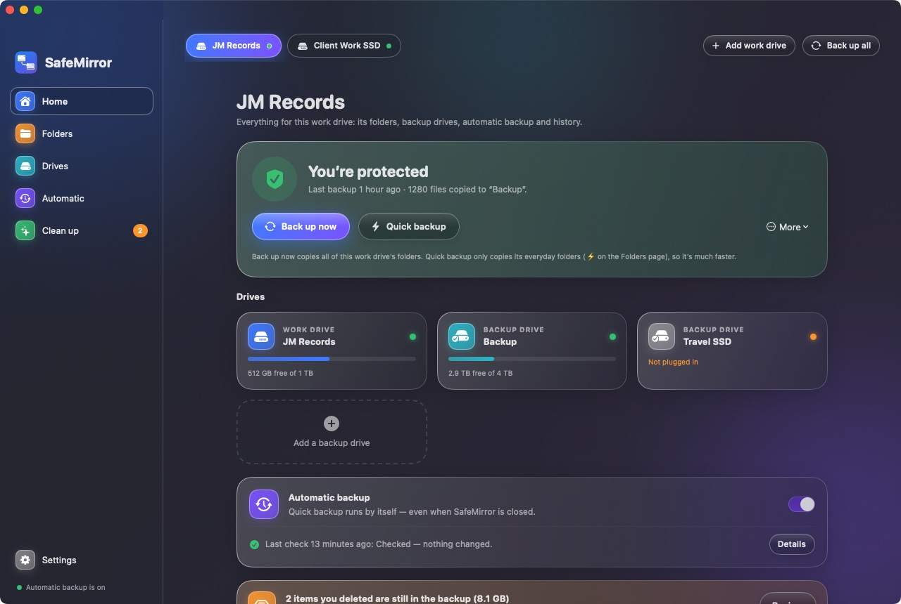
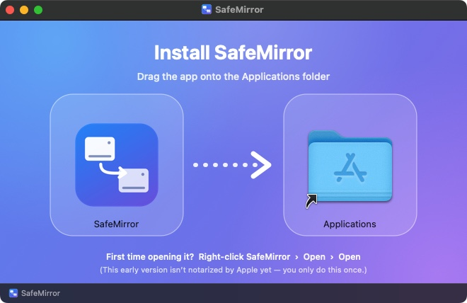

⇉
One-way, copy-only
Your work drive is only ever read. New and changed files are copied to the backup. Nothing in the backup is deleted automatically — removing anything is a separate step that you confirm.
Work drive
→Backup drive
SafeMirror copies your projects from one drive to another, keeps every older version of every file, and never deletes anything on its own. Made for people who live in Logic, Pro Tools and DaVinci.

A backup is only useful if you trust it. So SafeMirror is careful by design — and quick enough that you actually use it.
Your work drive is only ever read. New and changed files are copied to the backup. Nothing in the backup is deleted automatically — removing anything is a separate step that you confirm.
Edit a file and the previous version is kept next to your backup, not overwritten. Made a mistake last Tuesday? It’s still there.
Asks macOS what changed instead of re-reading every file. A backup starts in seconds.
If your creative app is open, SafeMirror holds back so it never copies a half-saved project.
Back up to more than one drive. Add more than one work drive — each is its own workspace with its own folders, schedule and rules.
Turn on automatic backup and it runs when you log in, on a schedule, and when you plug in a drive — with a menu-bar icon to see the state at a glance.
Pick the drive you work on and the drive that will hold the backup. SafeMirror recognises them even if you rename them or plug in a look-alike.
Tick the folders to protect and star the everyday ones. Quick backup and the automatic backup only copy those, so they’re fast.
Press Back up now once — or switch on automatic backup and forget about it. You’ll see “You’re protected” when all is well.
Home — one look tells you if you’re protected, what drives are connected, and what happened last.
Why the extra click? This early version isn’t notarized by Apple yet, so macOS asks you to confirm once. The app contains no ads, accounts or tracking.

Your work drive is only read, never changed (apart from one tiny hidden tag file that lets SafeMirror recognise it). Nothing in your backup is deleted automatically, and a changed file keeps its older version. Deleting is a separate step that always asks you first, and only works inside two folders SafeMirror itself created.
No. It has no account and no network features — everything stays between your drives and your Mac.
SafeMirror waits. A manual backup offers to ask the app to quit politely (you answer its save question); the automatic backup just skips and tries again later, and stops straight away if you open the app while it is copying.
The first backup has to look at and copy everything. After that SafeMirror asks macOS which folders changed and only looks at those. Every week (you can change it) and whenever macOS can’t vouch for its change list, it does a complete check to be sure.
macOS 14 or newer, on Apple Silicon and Intel. Any drive the Mac can write to — including exFAT drives you share with Windows.
Yes — every backup goes to all the backup drives that are plugged in, and each drive keeps its own full copy. You can also add several work drives; each has its own folders, schedule and rules.
The app is signed for your own Mac but not yet notarized by Apple, which needs a paid developer membership. Right-click → Open once and macOS remembers your choice.